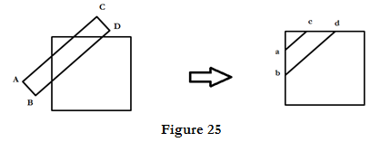
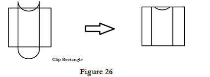
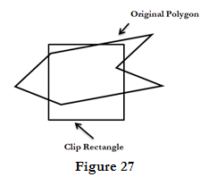
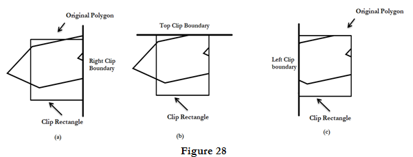
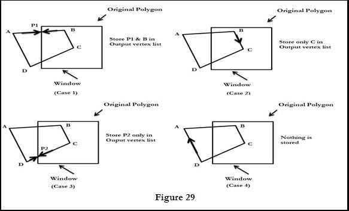

Collection of connected lines is considered as polygon.
A polygon clipper takes as input the vertices of polygon and return one (or more) polygon.
A closed polygon when clipped then we gets one or more open polygon or lines. Polygon clipping is shown in figure

Sutherland - Hodgeman Polygon Clipping:
Each edge of the polygon must be tested against each edge of the clip rectangle.
New edges must be added, and existing edges must be discarded, retained, or divided.
Multiple polygons may result from clipping a single polygon. We need an organized way to deal with all these cases.

Steps of Sutherland-Hodgeman's polygon clipping algorithm:
- Polygons can be clipped against each edge of the window one at a time.
- Vertices which are kept after clipping against one window edge are saved for clipping against the remaining edges.
- Note that the number of vertices usually changes and will often increases.

- After clipping all side boundaries as shown in Figure

Four Cases of polygon clipping against one Edge:
The clip boundary determines a visible and invisible region. The edges from vertex can be one of four types:
Case 1: If the first vertex is outside the window boundary and the second vertex is inside the window, then the intersection point with the boundary edge of window and vertex which is inside the window is stored in a output vertex list.
Case 2: If both, first and second vertexes of a polygon are lying inside the window, and then we have to store the second vertex only in output vertex list.
Case 3: If the first vertex is inside the window and second vertex is outside the window then we have to store only intersection point of that edge of polygon with window in output vertex list.
Case 4: If both the vertex first and second vertex of a polygon is lying outside the window then no vertex is stored in output vertex list.
